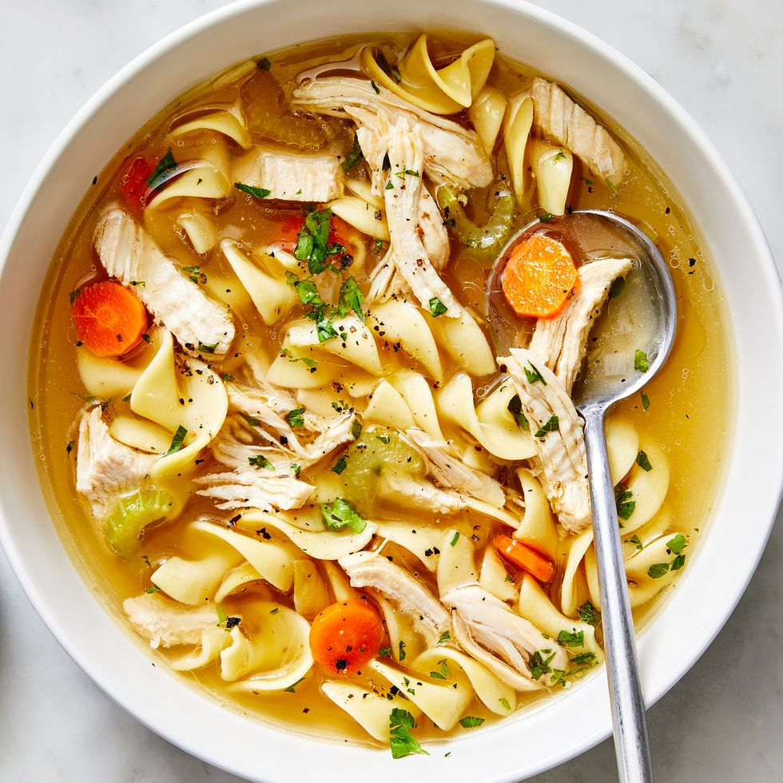

ChickenNoodleSoup

Description
A simple soup that is a timeless american classic, mainly made of generic spices, chicken, carrot, onion and celery
Ingredients
- 1/2 Tablespoon butter
- 2 ribs celery , diced
- 3-4 large carrots diced
- 1 clove garlic , minced
- 10 cups chicken stock , or broth*
- 1 teaspoon salt and pepper, to taste
- 1/2 teaspoon freshly ground black pepper , to taste
- 1/8 teaspoon dried rosemary ,or more, to taste
- 1/8 teaspoon dried parsley
- 1/8 teaspoon dried basil
- 2 Bay leaf
- 1 batch homemade egg noodles* , or 5 cups dry egg noodles, farfalle or other bite-size pasta
- 3 cups rotisserie chicken *
- Add butter, diced celery and carrots to a large stock pot over medium-high heat. Saute for 3 minutes. Add garlic and cook for another 30 seconds.
- Add chicken stock and season the broth with rosemary, basil, parsley, and salt (definitely TASTE the broth before adding more salt), and pepper. Taste .
- Bring broth to a boil. Add noodles (either uncooked homemade egg noodles, or dry store-bought pasta) and cook just until noodles are al dente.
- If using store-bought noodles, be cautious not to overcook them! Remove pot from heat as soon as they are just barely tender. The noodles will continue to cook once you remove the pot from the heat, and you don’t want them mushy.
- Add chicken meat from the rotisserie chicken. Taste the broth again and add more seasonings, if needed.
- Store leftovers in an airtight container in the refrigerator for 4-5 days, depending on the freshness of the chicken you used.